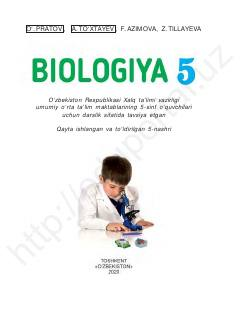

B55-sinf o'quvchilari uchun biologiya fanidan asosiy tushunchalar beruvchi darslik.
Ushbu darslik umumiy o'rta ta'lim maktablarining 5-sinf o'quvchilari uchun mo'ljallangan bo'lib, tiriklik dunyosi, o'simliklar, hayvonlar va tabiatni muhofaza qilish asoslarini o'rgatadi. Kitobda biologiya fanining asosiy sohalari, buyuk mutafakkir olimlarimizning ilm-fanga qo'shgan hissasi hamda tirik organizmlarning tuzilishi haqida boshlang'ich tushunchalar berilgan.